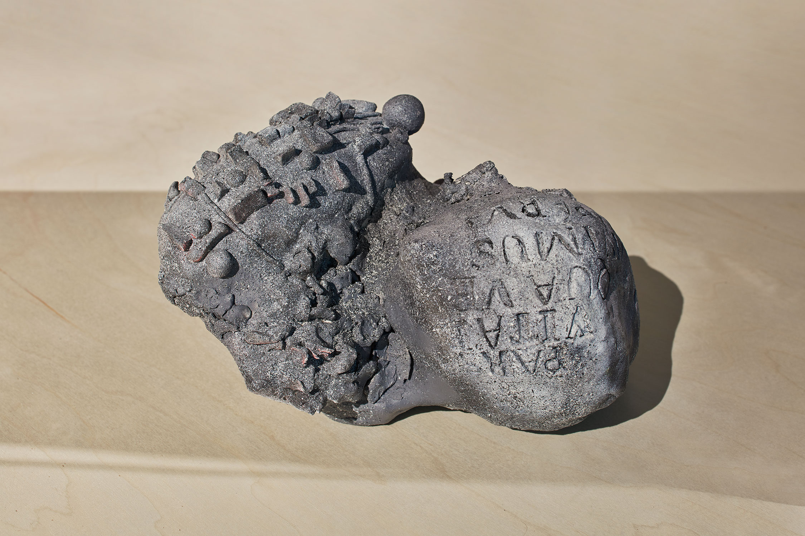
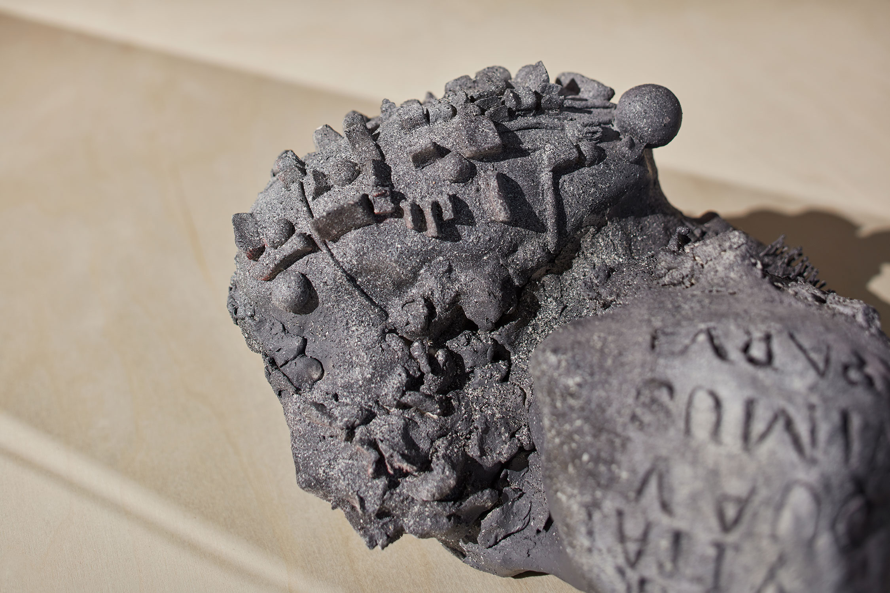
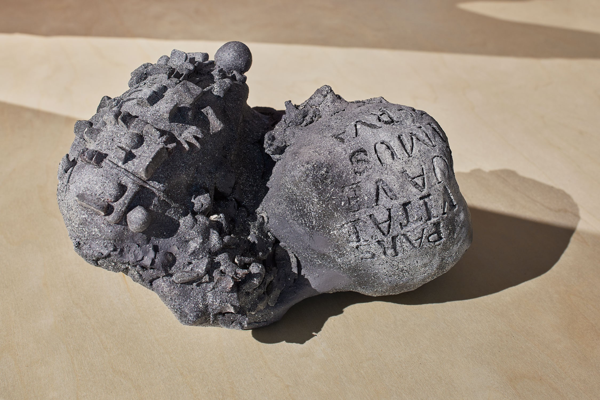
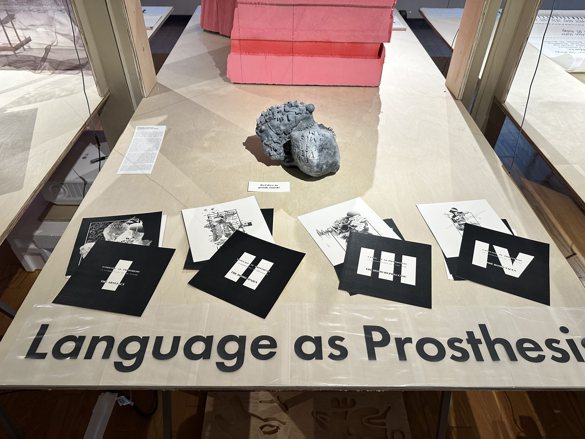

2022
LANGUAGE AS PROSTHESIS
An anthropology of the future
A projective fabulation exploring human evolution in response to shifting prosthetic influences across deep time.
CONTEXT
Deep Time Project, MIT SA+P
LOCATION
Planet Earth
TOOLS
Sculpting, Photoshop, Illustrator
SUPERVISOR
Cristina Parreño
EXHIBITION
Deep Time Architecture, MIT Student Center
What if our current biology is not our final state?
Could Homo sapiens diverge into multiple species? Could language evolve beyond speech and writing? The project asks how today’s human superorganism might fracture and reform through new bodily prosthetics, and whether communication across deep time is possible—or desirable.
Lingua Stele
The year is 5000 AD. A seemingly mundane stone has been discovered: a relic that, like the Rosetta Stone, may help future people decipher many secrets of history.



